Setting Up Cloud Firestore Database
Overview
This section walks you through creating a Cloud Firestore database, understanding how Firestore organizes data, adding data manually through the Firebase Console, and reading and writing data from your COMP 1800 project using JavaScript.
By the end of this page, your project will be able to store and retrieve data from a cloud database.
Prerequisites
Make sure you have completed Task 1: Setting Up Firebase before starting this section. Your project must already be connected to Firebase.
Creating a Firestore Database
Cloud Firestore is Firebase's flexible, scalable database. You will use it to store data such as user profiles, app content, and settings for your COMP 1800 project.
-
Open the Firebase Console and click on your project name to open it.
-
Click [Databases & Storage] in the left sidebar menu.
A submenu expands below the Build heading.
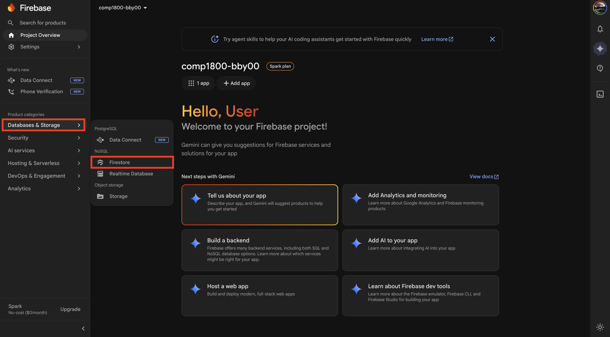
Figure 1: The Databases & Storage submenu in the left sidebar. -
Click [Firestore].
The Firestore landing page appears with a "Create database" button.
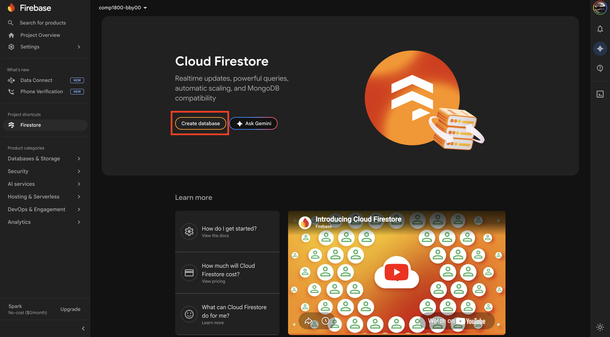
Figure 2: The Firestore Database landing page. -
Click [Create database].
A setup wizard opens.
-
Select Standard Edition.
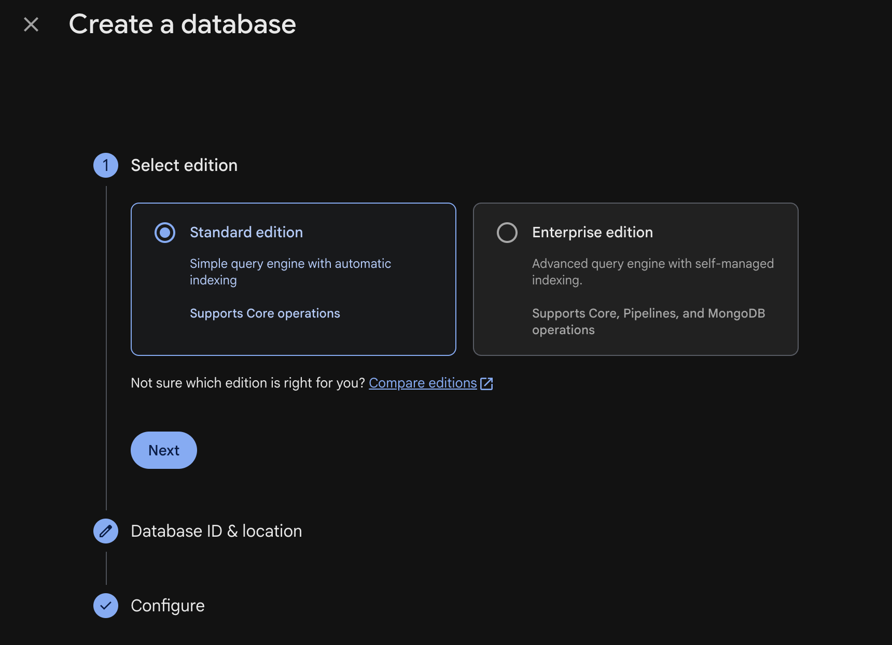
Figure 3: Selecting Standard Edition. -
Click [Next].
-
Select a Firestore location from the dropdown menu. Choose
northamerica-northeast1 (Montréal)as it is the closest region to Vancouver.Permanent Location
The database location cannot be changed after creation. Make sure you select the correct region before proceeding. Choosing a distant region will increase data retrieval times for your users.
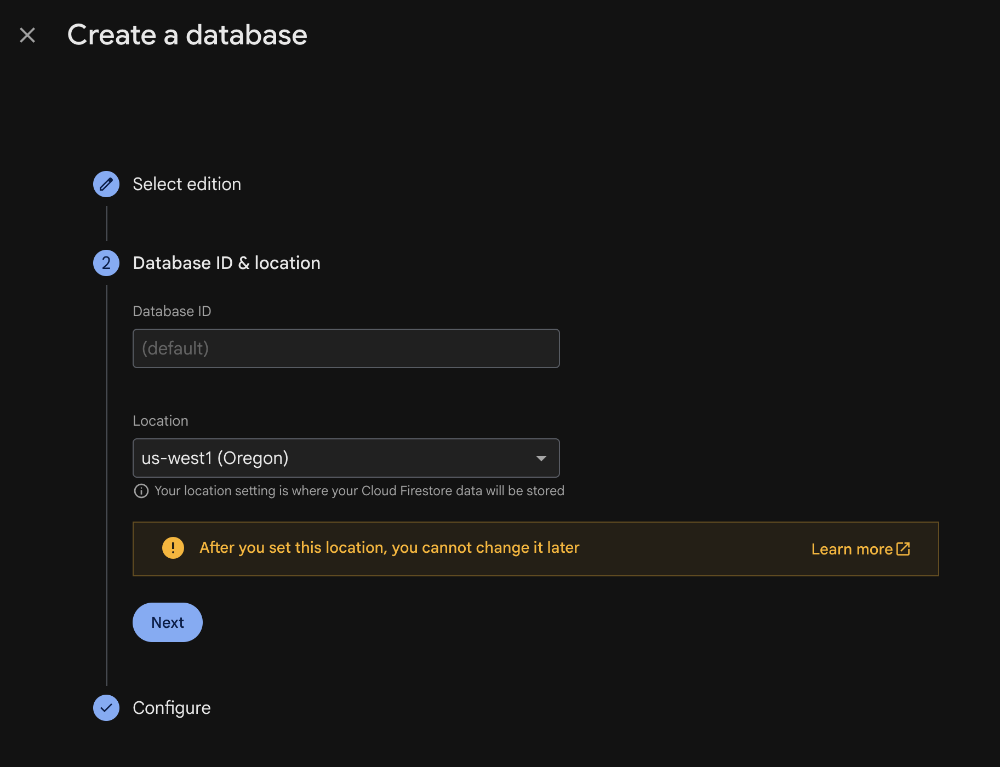
Figure 4: Selecting the Oregon database location. -
Click [Next].
-
Select "Start in test mode."
Test mode allows open read and write access for 30 days, which is suitable for development.
Test Mode Expiry
Test mode security rules expire after 30 days. If your database reads and writes suddenly stop working later in the term, check whether your security rules have expired. See Troubleshooting for the fix.
Expiry Date
The Firebase Console will display the exact expiry date for your test mode rules. Take note of this date.
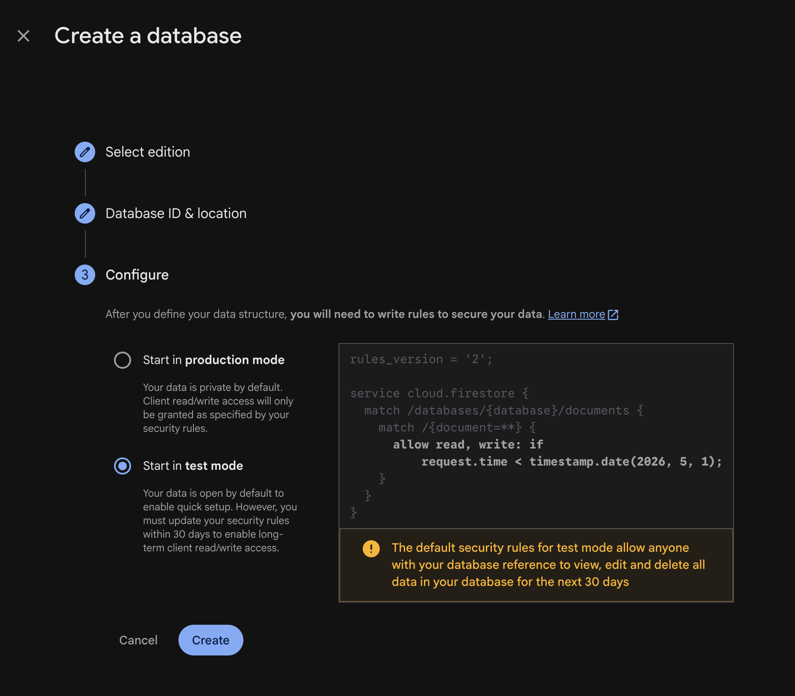
Figure 5: Selecting test mode for security rules. -
Click [Create].
Firestore takes a few seconds to provision your database. Once complete, the Firestore data viewer appears. It will be empty.
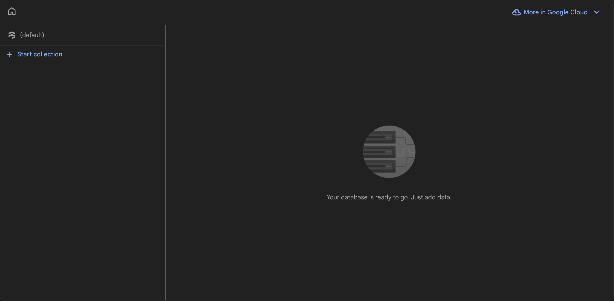
Figure 6: The empty Firestore data viewer, ready for data.
Database Created
You have created a Cloud Firestore database. The data viewer is now visible and ready for you to add collections and documents.
Understanding Firestore Structure
Before adding data, it is important to understand how Firestore organizes information. Firestore does not use traditional tables and rows like SQL databases. Instead, it uses collections and documents.
- A collection is a group of documents, similar to a folder. For example, a collection called
userswould hold all user-related documents. - A document is a single record within a collection, similar to a file inside a folder. Each document contains fields with values. For example, a document inside
usersmight have fields likename,email, andcity. - Each document is identified by a unique document ID, which can be auto-generated or manually set.
Here is a visual example of how COMP 1800 project data might be organized:
users (collection)
├── user001 (document)
│ ├── name: "Alice"
│ ├── email: "alice@bcit.ca"
│ └── city: "Vancouver"
├── user002 (document)
│ ├── name: "Bob"
│ ├── email: "bob@bcit.ca"
│ └── city: "Burnaby"
SQL Analogy
Think of collections as tables and documents as rows if you are familiar with databases. The key difference is that each document can have different fields — they do not all need to follow the same structure.
Adding Data Manually via the Firebase Console
Before writing JavaScript code, you will add a test document using the Firebase Console to confirm your database is working.
-
From the Firestore data viewer, click [Start collection].
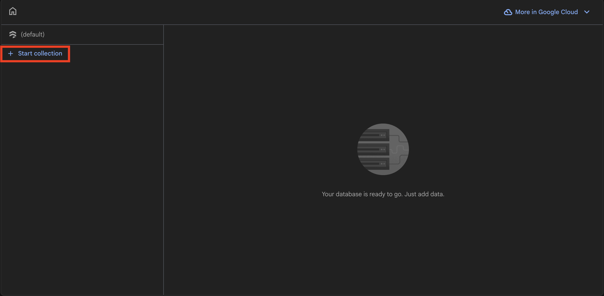
Figure 7: The Start collection button. -
Enter
usersas the Collection ID.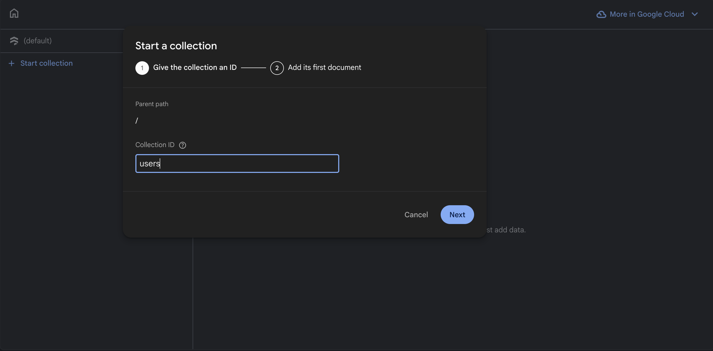
Figure 8: Entering the collection name. -
Click [Next].
The "Add a document" panel appears.
-
Click [Auto-ID] to let Firebase generate a unique document ID automatically.
Auto-Generated IDs
Auto-generated IDs look like a random string of characters (e.g.,
aB3dEf7gHi). This is normal. You can also enter a custom ID if you prefer, but Auto-ID is recommended for most cases. -
Enter the first field:
- Field name:
name - Type: select
stringfrom the dropdown - Value:
Test User
- Field name:
-
Click the + (add field) button to add another field:
- Field name:
email - Type: select
string - Value:
testuser@bcit.ca
- Field name:
-
Click the + (add field) button one more time to add a third field:
- Field name:
city - Type: select
string - Value:
Vancouver
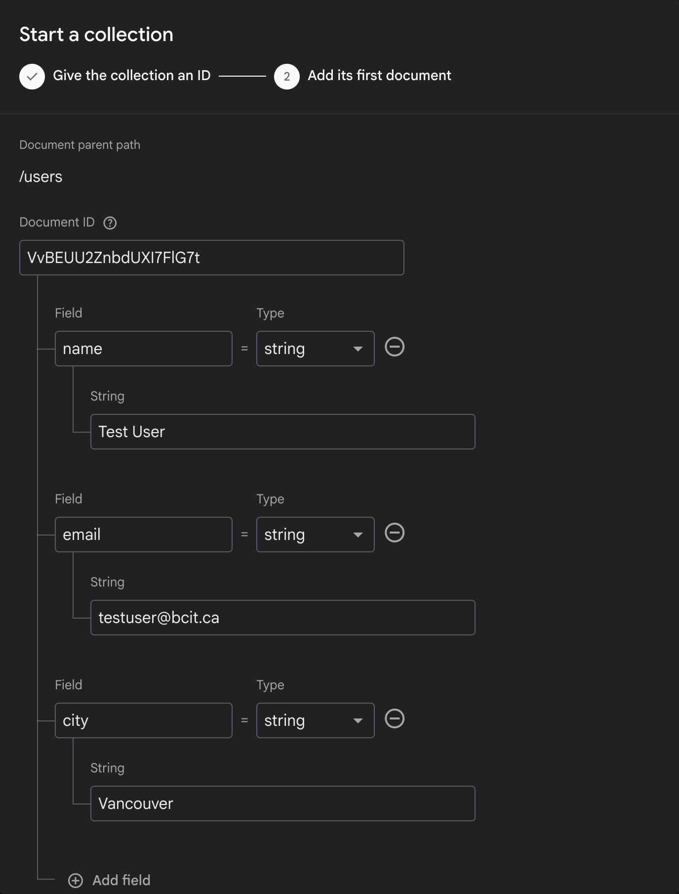
Figure 9: A completed document ready to save. - Field name:
-
Click [Save].
The document now appears in the Firestore data viewer under the
userscollection.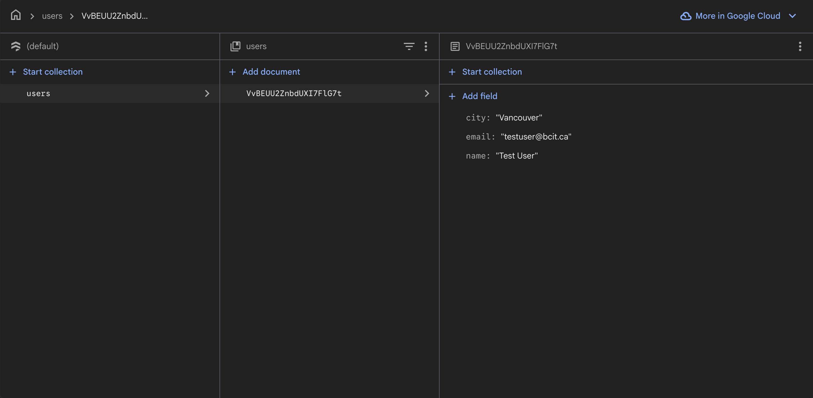
Figure 10: The saved document visible in the Firestore data viewer.
Document Added
You have manually added a document to Firestore. The users collection now contains one document with name, email, and city fields.
Reading Firestore Data from Your Project
Now that there is data in your Firestore database, you will write JavaScript to retrieve and display it in the browser console.
-
Open your COMP 1800 project in VS Code.
-
Create a new file at
src/firestoreTest.js. -
Add the following code to
src/firestoreTest.js:// src/firestoreTest.js import { collection, getDocs } from "firebase/firestore"; import { db } from "./firebaseConfig.js"; // Read all documents from the "users" collection async function readUsers() { const querySnapshot = await getDocs(collection(db, "users")); querySnapshot.forEach((doc) => { console.log(doc.id, " => ", doc.data()); }); } readUsers();This code imports the Firestore functions from the Firebase v9 SDK, connects to your database via the
dbinstance fromfirebaseConfig.js, and prints each document's ID and data to the browser console. -
Open
src/main.jsin VS Code. -
Add the following import at the top of the file:
Import Order
The
firestoreTest.jsimport must appear after any imports fromfirebaseConfig.js. IffirebaseConfig.jshas not been loaded yet, you will see an initialization error. See Troubleshooting for help resolving this. -
Save both files.
-
Start the Vite development server (if not already running):
-
Open the URL printed by Vite (e.g.,
http://localhost:5173) in Google Chrome. -
Open the browser developer console:
Press F12 or Ctrl+Shift+J.
Press Cmd+Option+J.
The console should display the document ID and data you added earlier. The output will look similar to:
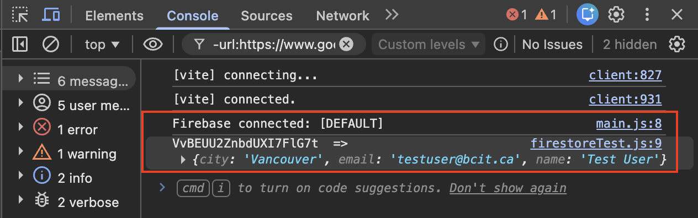
Figure 11: Firestore data successfully read and displayed in the console.
Read Successful
Your project can now read data from Firestore. If you see your document data printed in the console, the connection is working correctly. If nothing appears, see Troubleshooting.
Writing Data to Firestore from Your Project
Next, you will add JavaScript code that writes a new document to Firestore directly from your project.
-
Open
src/firestoreTest.jsin VS Code. -
Replace the entire contents with the following code, which includes both reading and writing:
// src/firestoreTest.js import { collection, getDocs, addDoc } from "firebase/firestore"; import { db } from "./firebaseConfig.js"; // Read all documents from the "users" collection async function readUsers() { const querySnapshot = await getDocs(collection(db, "users")); querySnapshot.forEach((doc) => { console.log(doc.id, " => ", doc.data()); }); } // Write a new document to the "users" collection async function addUser() { try { const docRef = await addDoc(collection(db, "users"), { name: "Jane Doe", email: "janedoe@bcit.ca", city: "Surrey" }); console.log("Document written with ID: ", docRef.id); } catch (error) { console.error("Error adding document: ", error); } } readUsers(); addUser();This code uses the v9 modular function
addDocto create a new document in theuserscollection with three fields:name,email, andcity. Firebase automatically generates a unique document ID. -
Save the file.
-
Refresh the browser tab running your Vite dev server.
-
Open the browser developer console (if not already open):
Press F12 or Ctrl+Shift+J.
Press Cmd+Option+J.
The console should display a message similar to:
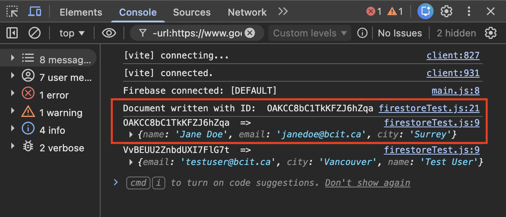
Figure 12: Confirmation that a new document was written to Firestore. -
Return to the Firebase Console in your browser.
-
Navigate to [Firestore Database] and click on the
userscollection. -
Verify that the new document appears in the data viewer with the fields
name: "Jane Doe",email: "janedoe@bcit.ca", andcity: "Surrey".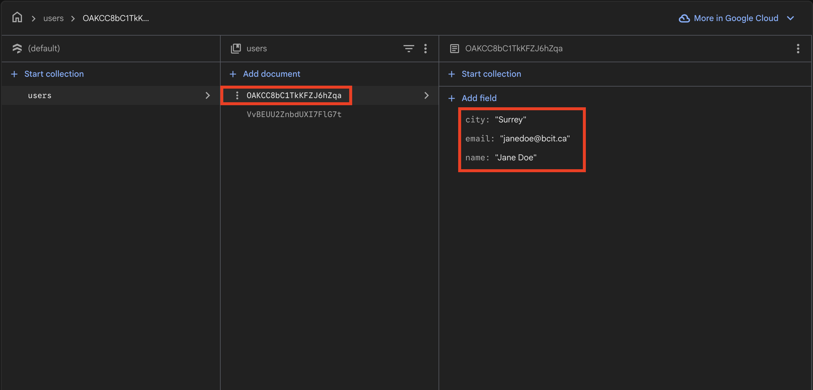
Figure 13: The users collection now contains two documents.
Read & Write Working
Your project can now both read from and write to Firestore. You have a fully functional database connection.
Cleaning Up Test Code
Before continuing to the next task, remove the test code so it does not run every time your page loads.
-
Open
src/main.jsin VS Code. -
Remove the line
import "./firestoreTest.js";. -
Delete the file
src/firestoreTest.jsfrom your project. -
Save all modified files.
Test Data Cleanup
The test documents you added (both through the console and through JavaScript) will remain in your Firestore database. You can delete them manually from the Firestore data viewer by clicking the three-dot menu next to each document and selecting [Delete document].
Conclusion
In this section, you:
- Created a Cloud Firestore database in the Firebase Console
- Learned how Firestore organizes data using collections and documents
- Added a test document manually through the Firebase Console
- Read Firestore data from your project using JavaScript and displayed it in the browser console
- Wrote a new document to Firestore from your project using JavaScript
- Cleaned up test code
If both the read and write operations displayed the expected output in the browser console, your Firestore database is correctly configured. If you encountered errors, refer to the Troubleshooting page.